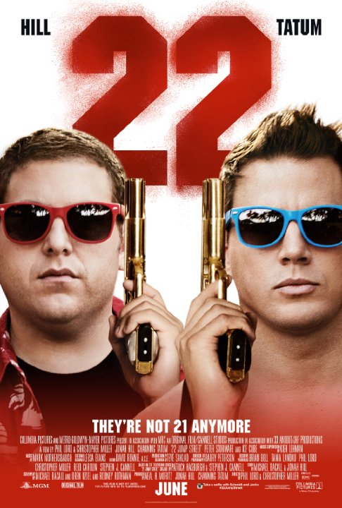

-

- Actie
- Komedie


22 jump street
In de actie-komedie 22 Jump Street gaan de agenten Jenko (Channing Tatum) en Schmidt (Jonah Hill) opnieuw undercover als de broers Doug en Brad McQuaid
Ze moeten als eerstejaars studenten op de universiteit proberen uit te zoeken wie er achter de nieuwe drugssensatie zit genaamd WHYPHY. Jenko wordt al snel omarmd door het populaire American football team en Schmidt probeert de nerdy art-scene te infiltreren. Als blijkt dat de twee agenten hele andere ideeën hebben over hoe ze het beste de zaak op kunnen lossen komt hun vriendschap onder druk te staan.